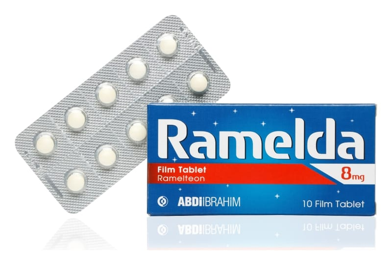

Ramelda 8 mg Film Kaplı TABLET,30 Adet

Ne için kullanılır
KT · Bölüm 1RAMELDA bir uyku ilacıdır. RAMELDA, uykusuzluk nedeniyle uykuya dalmakta güçlük belirtisi gösteren yetişkinlerin tedavisinde kullanılmaktadır.
RAMELDA, açık sarı renkte yuvarlak, bikonveks film kaplı tablettir.
Bu ilacı kullanmaya başlamadan önce bu KULLANMA TALİMATINI dikkatlice okuyunuz, çünkü sizin için önemli bilgiler içermektedir.
Bu kullanma talimatını saklayınız. Daha sonra tekrar okumaya ihtiyaç duyabilirsiniz. Eğer ilave sorularınız olursa, lütfen doktorunuza veya eczacınıza danışınız. Bu ilaç kişisel olarak sizin için reçete edilmiştir, başkalarına vermeyiniz. Bu ilacın kullanımı sırasında, doktora veya hastaneye gittiğinizde doktorunuza bu ilacı kullandığınızı söyleyiniz. Bu talimatta yazılanlara aynen uyunuz. İlaç hakkında size önerilen dozun dışında yüksek veya düşük doz kullanmayınız.
Tabletler 10 ve 30 tablet içeren PVC/PVDC-aluminyum blister ambalajlarda kullanıma sunulmuştur.
RAMELDA, etkin madde olarak ramelteon içeren ve melatonin reseptör agonistleri adı verilen bir ilaç grubuna dahildir.
RAMELDA 8 mg, günde 1 kez olacak şekilde düzenli olarak her gün uyumak için yatağa girmeden 30 dakika önce alınır. Günde 1 tabletten fazla kullanılmamalıdır.